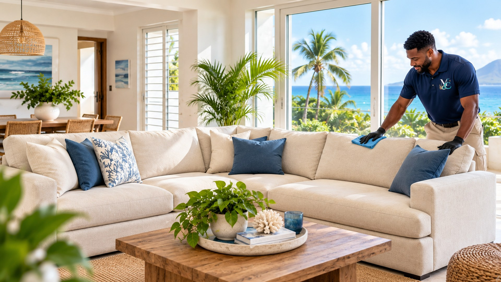

Canapés
Assises, dossiers et zones les plus sollicitées.
Nettoyage textile à domicile · Martinique
MADYCLEAR prend soin de vos textiles directement chez vous, avec une approche soignée, claire et adaptée à chaque support.
06 96 01 70 07
Notre spécialité actuelle
Une seule priorité : prendre soin des surfaces textiles qui participent chaque jour au confort de votre intérieur.
Assises, dossiers et zones les plus sollicitées.
Entretien soigné de la surface textile de couchage.
Nettoyage adapté à la matière et à l’état du tapis.
Soin ciblé des assises et dossiers textiles.
Entretien des assises et dossiers rembourrés.
Traitement sur devis selon surface et configuration.
Confort intérieur
Un canapé, un matelas ou un tapis ne sont pas de simples surfaces à nettoyer. Ils font partie de l’ambiance, du confort et du quotidien de votre intérieur.
MADYCLEAR privilégie une intervention soignée, discrète et adaptée au support.
Ce que vous recherchez vraiment
Retrouvez une sensation de fraîcheur et de propreté dans les pièces que vous utilisez le plus.
Un entretien adapté aide à préserver l’aspect et l’usage de votre mobilier textile.
Pas besoin de déplacer votre mobilier : MADYCLEAR vient à vous.
Le besoin est étudié selon les éléments, la matière, l’état et la configuration.
Repère tarifaire
Tarif précis selon les éléments sélectionnés et les caractéristiques de l’intervention.
Plusieurs éléments ? Les packs restent personnalisés et sont proposés uniquement sur devis.
Décrivez simplement ce que vous souhaitez faire nettoyer.
Estimer mon interventionEstimation personnalisée
Quelques informations suffisent pour préparer votre demande. Elle est enregistrée par MADYCLEAR, puis WhatsApp s’ouvre afin que vous puissiez transmettre vos photos.
Confiance
MADYCLEAR mise sur la transparence, la discrétion et un échange simple avant toute prestation.
Le support et le besoin sont vérifiés avant intervention.
Le devis précise les éléments retenus et les conditions applicables.
L’intervention est réalisée avec soin et discrétion.
L’univers MADYCLEAR
Ces expertises complètent progressivement l’offre MADYCLEAR. Aujourd’hui, le Textile reste notre priorité et la porte d’entrée principale de la marque.